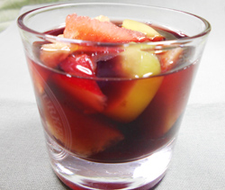

サングリア
- 調理時間：15 分
- 作った量（全量）
- カロリー：791kcal
- たんぱく質：3.8g
- 脂質：0.5g
- 炭水化物：74.5g
- 塩分：0g


＜作った量（全量）＞
- 赤ワイン（１本）
- 750ml
- スイカ
- 200g
- もも
- 1個
- リンゴ
- 1/4個
- マスカット
- 5粒
- 砂糖
- 大さじ1～2


- フルーツは適当な大きさに切る。
※リンゴ、マスカットは皮つきでOK - フルーツと砂糖を混ぜ合わせ、ワインを注げば出来上がり。
飲むときに炭酸水で割ってもおいしい。
サングリア
サングリアはスペイン発祥のお酒です。語源は、スペイン語の「sangre＝血液」で、赤ワインの鮮やかな色合いから呼ばれるようになりました。ですから、サングリアといえば赤ワインのイメージなのですが、白ワインでつくる「サングリア・ブランカ」もあり、バラエティに楽しむことができます。
サングリアは、カットしたフルーツやスパイス、ハーブ、甘味とワインを組み合わせてつくるシンプルなレシピです。渋味のある赤ワインはベリー系のフルーツやシナモン、スターアニスのスパイスと相性がよく、酸味のある白ワインはレモンなどの柑橘類やパイナップルなどの南国フルーツとの相性がよいです。飲みやすいのでお酒の弱い方や女性にも喜ばれます。